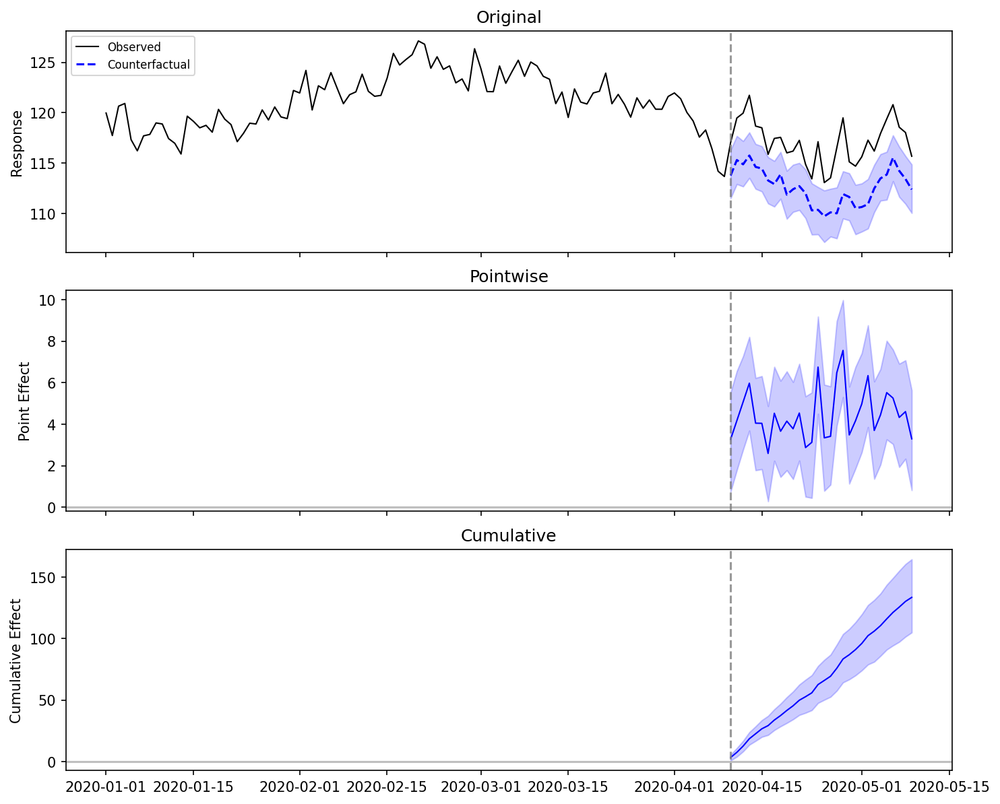

bsts-causalimpact
Bayesian structural time series for causal inference in Python. A faithful port of Google's CausalImpact R package, with the Gibbs sampler implemented in Rust via PyO3.
No TensorFlow required. 10-30x faster than R.
Installation
Requires Python 3.10+. Rust is only needed when building from source instead of installing a wheel.
Example: Measuring the Effect of an Intervention
This walkthrough mirrors the R CausalImpact tutorial.
1. Create Example Data
Construct a synthetic dataset: a response variable y driven by a covariate x,
with a known intervention effect of +5 units injected after time point 100.
import numpy as np
import pandas as pd
from causal_impact import CausalImpact
rng = np.random.default_rng(42)
n_pre, n_post = 100, 30
n = n_pre + n_post
x = rng.normal(0, 1, size=n).cumsum() + 100
y = 1.2 * x + rng.normal(0, 1, size=n)
y[n_pre:] += 5.0 # inject intervention effect
dates = pd.date_range("2020-01-01", periods=n, freq="D")
data = pd.DataFrame({"y": y, "x": x}, index=dates)
pre_period = ["2020-01-01", "2020-04-09"]
post_period = ["2020-04-10", "2020-05-09"]
The first column (y) is the response variable. Remaining columns are covariates
that the model uses to build a counterfactual prediction.
2. Run the Analysis
CausalImpact fits a Bayesian structural time series model on the pre-intervention
data, then generates counterfactual predictions for the post-intervention period.
3. Visualize the Results

The plot has three panels:
- Top panel: observed data (solid) vs. counterfactual prediction (dashed) with 95% credible interval
- Middle panel: pointwise causal effect (observed minus predicted)
- Bottom panel: cumulative causal effect over the post-intervention period
4. Summary Statistics
Posterior inference {CausalImpact}
Average Cumulative
Actual 117.11 3513.26
Prediction (s.d.) 112.66 (0.49) 3379.75 (14.79)
95% CI [111.63, 113.61] [3348.81, 3408.33]
Absolute effect (s.d.) 4.45 (0.49) 133.51 (14.79)
95% CI [3.50, 5.48] [104.93, 164.45]
Relative effect (s.d.) 3.95% (0.46%) 3.95% (0.46%)
95% CI [3.08%, 4.91%] [3.08%, 4.91%]
Posterior tail-area probability p: 0.001
Posterior prob. of a causal effect: 99.90%
The summary table shows the average and cumulative causal effect, along with credible intervals and a Bayesian p-value.
5. Narrative Report
Analysis report {CausalImpact}
During the post-intervention period, the response variable showed a increase
compared to what would have been expected without the intervention.
The average causal effect was 4.45 (95% CI [3.50, 5.48]).
The cumulative effect over the entire post-period was 133.51.
The relative effect was 4.0%.
This effect is statistically significant (p = 0.0010). The probability of
obtaining an effect of this magnitude by chance is very small. Hence, the
causal effect can be considered statistically significant.
6. Access Raw Inferences
# Per-timestep effects, predictions, and credible intervals
df = ci.inferences
print(df.head())
# Aggregate statistics as a dict
stats = ci.summary_stats
print(stats["point_effect_mean"])
print(stats["p_value"])
Working with Covariates
The model treats the first column as the response and all remaining columns as covariates. Covariates must not be affected by the intervention.
data = pd.DataFrame({
"y": response,
"x1": covariate_1,
"x2": covariate_2,
}, index=dates)
ci = CausalImpact(data, pre_period, post_period)
When covariates are present, the model uses spike-and-slab variable selection to determine which covariates are informative. Check posterior inclusion probabilities:
Model Parameters
| Parameter | Default | Description |
|---|---|---|
niter |
1000 | Total MCMC iterations |
nwarmup |
500 | Burn-in iterations to discard |
nchains |
1 | Number of MCMC chains |
seed |
0 | Random seed for reproducibility |
prior_level_sd |
0.01 | Prior standard deviation for the local level |
standardize_data |
True |
Standardize data before fitting |
expected_model_size |
2 | Expected number of active covariates (spike-and-slab prior) |
dynamic_regression |
False |
Enable time-varying regression coefficients |
state_model |
"local_level" |
"local_level" or "local_linear_trend" |
nseasons |
None |
Seasonal cycle count |
season_duration |
None |
Duration of each seasonal block (defaults to 1 when nseasons is set) |
Pass parameters via model_args:
ci = CausalImpact(
data, pre_period, post_period,
model_args={"niter": 5000, "seed": 123, "prior_level_sd": 0.05}
)
When This Method Is Valid
This method produces reliable estimates only when all of the following hold:
- Control series are not contaminated by the intervention
- The relationship between treated and control series is stable across the pre- and post-intervention periods
- The pre-intervention period is sufficiently long (rule of thumb: at least 3x the post-intervention period)
If any of these assumptions are violated, consider a difference-in-differences or synthetic control approach instead.